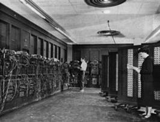
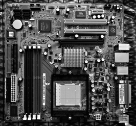

Placa base: components i configuració
A la placa base de l’ordinador podem trobar els components fonamentals que conformen un ordinador. Per tal de conèixer aquest maquinari fonamental començarem fent una introducció al concepte de maquinari, tal com s’entén en l’entorn de la informàtica.
Les màquines informàtiques o els sistemes informàtics més habituals en la informàtica són els ordinadors. Llavors, podem dir que un ordinador està compost per un conjunt de maquinari (que inclou la caixa o carcassa i tots els components interns d’aquesta, a més de tots els elements externs o perifèrics: el monitor, el teclat, el ratolí, etc.) i un conjunt de programari (software, en anglès) que permet usar més còmodament els ordinadors i treure’n el màxim profit.
El maquinari que forma actualment els ordinadors ha canviat al llarg del temps, a mesura que la tecnologia ha evolucionat. Conèixer aquesta evolució ens permetrà comprendre millor el maquinari actual i les tendències futures.
A continuació, es presenta un esquema sobre l’evolució històrica de l’arquitectura dels ordinadors des del primer computador fins avui dia:
- Es pot considerar que Charles Babbage (1792-1871) va dissenyar el primer ordinador, anomenat màquina analítica. Però no el va poder fer funcionar realment, ja que la tecnologia de la seva època no era prou precisa.
- La primera generació de veritables ordinadors es va caracteritzar per la seva arquitectura de tubs de buit (1945-1955). Eren màquines molt grans i molt lentes.
- La segona generació la van constituir les màquines basades en transistors (1955-1965). Gràcies a la introducció del transistor, es van començar a construir mainframes o macrocomputadors.
- La tercera generació (1965-1980) fou la dels circuits integrats o xips. La incorporació dels circuits integrats en xips possibilità la creació d’ordinadors més petits.
- La quarta generació (des de 1980) és la dels PC (ordinadors personals o microordinadors). En aconseguir-se un xip que integrés un microprocessador, els ordinadors van baixar de preu.
- 
- ENIAC: mítica màquina de primera generació construïda amb tubs de buit
Actualment, doncs, el maquinari dels ordinadors consta d’una sèrie de components electrònics, que continuen evolucionant a mesura que ho fa la tecnologia.
Les parts de maquinari fonamentals dels ordinadors actuals són la placa base –que és la que controla i interconnecta la resta de dispositius del sistema–, el processador –que moltes vegades ha estat definit com el cervell del sistema perquè implementa la unitat central de processament i executa els programes– i la memòria principal –que és la part que emmagatzema la informació i els programes en execució.
Podeu trobar més informació sobre la història de la informàtica a la secció Adreces d’interès dels materials web.
Placa base
La placa base també és coneguda com a placa mare i amb els termes anglesos mainboard o motherboard. És la targeta de circuits impresos principal de l’ordinador, on, gràcies a les ranures o slots, es connecten el processador, la memòria, la targeta gràfica, la targeta de so, els controladors per a discos durs, els perifèrics, etc.
- 
- Placa base
La placa base està constituïda per diversos elements o components, cadascun amb diferents funcions. A continuació, se’n proporciona una llista no exhaustiva:
- Chipset o joc de xips
- Busos
- BIOS
- Ranura o sòcol per al processador
- Ranures o sòcols per a la memòria
- Ranures d’expansió
- Pila
- Rellotge
- Ponts de configuració
- Connector d’alimentació
- Connectors de les interfícies IDE
- Connectors per a perifèrics…
La distribució d’aquests components de la placa base i les seves dimensions depenen d’estàndards. L’estàndard més habitual actualment és l’ATX (que concorda amb el seu equivalent en carcasses), però n’hi ha molts altres, com ara l’antic AT, o d’altres derivats de l’ATX com el baby ATX, el mini ATX, el micro ATX, el mini ITX… També hi ha estàndards com el que es preveu que substituirà l’ATX en un futur proper, el BTX.
L’estàndard ATX és l’estàndard més utilitzat actualment per a la distribució i organització dels diferents components dintre de les plaques base. L’ATX té unes dimensions de 12″ × 9,6″, és a dir, de 305 mm × 244 mm.
Darrerament les plaques base incorporen, integrats, certs components que anteriorment tan sols es podien afegir a l’ordinador com a components independents, connectats a aquesta placa base. Aquests components integrats poden ser els següents:
- Controladors de dispositius: xips que controlen els discos durs, disqueteres o ports en sèrie.
- Targeta de so integrada.
- Controladora de vídeo o targeta de vídeo integrada.
- Targeta de xarxa Ethernet integrada.
- Mòdem integrat…
La integració de components fa que baixi el preu dels ordinadors. A més, es guanya en comoditat de muntatge, ja que hi ha menys cables i targetes a l’interior de la carcassa. També fa disminuir la temperatura a l’interior de la caixa i n’afavoreix la ventilació. Alguns detractors d’aquest sistema assenyalen la menor qualitat dels dispositius integrats en comparació dels tradicionals i el fet que el no-funcionament d’un d’aquests components integrats el fa pràcticament irreparable, ja que la reparació d’una part de la placa base pot resultar complicada i costosa.
El joc de xips
El chipset o joc de circuits integrats o xips consisteix, normalment, en un parell de xips (northbridge i southbridge) que controlen les connexions entre diferents parts de l’ordinador. Es tracta d’una de les parts més importants de la placa base, ja que del joc de xips depèn, en gran part, el bon funcionament i el control de tot el sistema.
Normalment, el xip northbridge (situat tradicionalment a la part superior –nord– a les plaques base ATX) s’encarrega de controlar la comunicació del processador amb la memòria cau i la memòria central, i de la comunicació amb el southbridge (situat tradicionalment a la part inferior –sud– a les plaques base ATX). El southbridge normalment s’encarrega del control dels ports, dispositius d’emmagatzematge, targetes d’expansió…
Podeu consultar un llistat dels principals fabricants de xipsets en l’apartat “Adreces d’interès” del web del mòdul.
BIOS
El nom de BIOS és l’acrònim anglès de basic input-output system.
El BIOS és un subsistema de l’ordinador ubicat en un xip de la placa base. Aquest xip conté microprogramari (firmware, en anglès) allotjat bàsicament en memòria EPROM (erasable programmable read only memory) i memòria de tipus flaix (flash memory) no volàtil, que pot ser esborrada i reprogramada elèctricament.
El BIOS s’encarrega, en primera instància, de detectar i comprovar tots els components connectats a l’ordinador per a oferir connexió d’aquests amb el sistema operatiu. Aquest procés és anomenat POST (power-on self-test).
La configuració del BIOS es pot fer per mitjà d’una interfície d’aplicació no visual que es pot carregar en iniciar l’ordinador, normalment prement una tecla (per exemple la tecla Del, o la tecla F2) o una combinació de tecles, segons s’indiqui en iniciar-se el sistema.
En l’aplicació de configuració del BIOS es pot introduir una contrasenya perquè els usuaris no autoritzats no el puguin reconfigurar. També des del BIOS es pot establir una contrasenya d’accés a l’ordinador.
Les funcionalitats més habituals i útils són les següents:
- Canviar la data i hora del sistema.
- Visualitzar i configurar els dispositius d’emmagatzematge (disquets, discos durs, CD, DVD…).
- Canviar la contrasenya d’accés al BIOS.
- Configuració de dispositius com el teclat.
- Configuració dels ports i dispositius PCI, USB…
- Configuració de paràmetres avançats, com ara de freqüència del processador, de la memòria, actualització del BIOS…
- Configuració de sistemes d’estalvi d’energia (per a monitor i discos).
- Seqüència de dispositius d’engegada (ordre en què s’iniciarà la càrrega del sistema). Se sol deixar en primer lloc la disquetera, si n’hi ha –per introduir un disquet de recuperació en cas necessari–, el disc dur principal –per a carregar, per defecte, el sistema operatiu que té instal·lat–, i la unitat de CD.
- Desar o no els canvis realitzats.
En sortir de l’aplicació de configuració del BIOS, es poden acceptar i emmagatzemar els canvis introduïts o bé sortir sense gravar-los. En cas de no estar segurs dels canvis introduïts, la millor opció és deixar la configuració inicial.
Podeu consultar els webs d’alguns dels principals fabricants de BIOS en l’apartat “Adreces d’interès” del web del mòdul.
Actualment, també, els fabricants permeten actualitzar el programari del BIOS per a obtenir noves funcionalitats o controls. L’actualització del BIOS és un procés delicat perquè una mala configuració podria deixar l’ordinador sense funcionar.
Connector del processador
La zona preparada per a connectar el processador a la placa base es coneix amb el nom de connector del processador. De vegades també s’anomena sòcol del processador. En anglès, s’utilitzen els termes slot (ranura) o socket.
Aquest connector presenta formats diferents segons la família de processadors que s’hi vulgui connectar.
Els formats més típics per a ranures de processadors són els següents:
- PGA (acrònim anglès de pin grid array). Es tracta d’un sistema per a antics processadors 286, 386 i 486. Malgrat que n’hi ha diversos submodels depenent del processador concret, la forma general consistia en una quadrícula plena de petits connectors on s’introduïen els pius del xip del processador a pressió.
- ZIF (acrònim anglès de zero insertion force). En paral·lel amb el sistema PGA, es va crear aquest sistema mecànic que facilitava la inserció del xip del processador sense haver de fer força i així evitava el deteriorament dels pius.
- LGA (acrònim anglès de land grid array). Aquest nou sistema sorgeix en els processadors Pentium 4 i AMD64. Canvia el sistema de subjecció de pius.
- D’altres. S’han creat altres sistemes de connexió del processador a la placa base com ara slot 1, que es va crear per a Pentium II. Consistia en una ranura allargada, semblant a les ranures d’expansió PCI. AMD també va crear uns sòcols en aquest format allargat per als primers AMD K7.
Actualment, les versions dels formats de connectors més usats són les següents:
- Per a processadors Intel:
- Socket 478, per a alguns Intel Pentium 4 i Celeron.
- Socket T o LGA775, per a Intel Pentium Extreme Edition, Petium D i Intel Core Duo.
- Socket P, per a processadors Intel Core 2 d’ordinador portàtil.
- Socket 441, per a processadors Intel Atom, utilitzats en ordinadors ultraportàtils i smart phones (telèfons intel·ligents).
- Socket B o LGA1366 per a Intel Core i7 i i9,
- Socket H o LGA1156 per a Intel Core i3, i6 i i7.
- Per a processadors AMD:
- Socket 754, per a microprocessadors Athlon 64, Sempron i Turion 64.
- Socket 939, per a AMD Athlon 64 i Opteron.
- Socket S1, per a AMD Turion 64, Athlon 64 Mobile i Sempron.
- Socket AM2 (substitut del Socket 939), per a AMD Opteron.
- Socket AM2+ per a AMD Athlon 64, Athlon X2 i Phenom.
- Socket AM3 per a AMD Phenom II i AMD Athlon II.
Tant en el cas d’AMD com d’Intel estan ordenats per ordre d’aparició. Alguns dels models han estat utilitzats tant en ordinadors de sobretaula com en portàtils, com és el cas del Socket 754 d’AMD. Altres han estat dissenyats directament per a la informàtica mòbil, com el Socket 441 d’Intel.
Addicionalment, a sobre del processador, se solen posar ventiladors o dissipadors per a mantenir una temperatura adequada per al bon funcionament del processador i del sistema.
Ranures o sòcols de memòria
Les ranures o sòcols de memòria són les zones on s’insereixen els mòduls de memòria principal.
La memòria volàtil...
… és la memòria que no manté la informació una vegada s’apaga l’ordinador.
Els mòduls de memòria principal, o simplement mòduls de memòria, són com petites targetes on hi ha connectats els xips de memòria volàtil de tipus RAM (random access memory).
Aquests mòduls de memòria es troben en formats i interfícies de connexió amb la placa base diferents. Els tipus de mòduls, amb les seves interfícies més habituals, són els següents:
- SIMM (single in-line memory module). Per a plaques base amb busos de fins a 32 bits. Hi ha dues modalitats d’interconnexió amb la placa base:
- 30 pius o 30 contactes
- 72 pius o 72 contactes
Les interfícies de connexió...
… són les zones on s’interconnecten pròpiament els mòduls de memòria amb la placa base. Se solen caracteritzar pel nombre de pius o contactes de què disposen.
- DIMM (dual in-line memory module). Per a sistemes de 64 bits. Se solen interconnectar per mitjà d’interfícies de 168 pius.
- DIMM DDR (DIMM per a DDR SDRAM). La interfície de connexió és de 184 pius.
- DIMM DDR2 (DIMM per a DDR2 SDRAM). Amb una interfície de 240 pius. Sistema que millora DIMM DDR però que no és compatible.
- RIMM (rambus in line memory module). Amb una interfície de 184 pius. Actualment, en desús.
Busos
Els busos són un conjunt de línies de transmissió tradicionalment en paral·lel, tot i que actualment se’n fan de sèrie, que serveixen per a intercomunicar els diferents blocs (unitat central de processament, memòria, equips perifèrics, etc.) que componen un ordinador.
Els busos, doncs, proporcionen el camí per a comunicar el processador amb la resta de dispositius integrats o connectats a la placa base i aquests amb aquells.
La velocitat a la qual es transmeten les dades sobre aquests busos és determinant, juntament amb l’eficiència del joc de xips, per a garantir uns bons resultats de la placa base.
Els busos poden tenir sistemes de comunicació:
- En paral·lel. Aquests sistemes permeten transmetre diversos bits simultàniament per diversos fils (com, per exemple, els busos FSB, ISA, ATA, SCSI, PCI…). Dintre dels busos en paral·lel hi ha amplades de bus diferents (normalment de 8, 16, 32 i, actualment, 64 bits de transmissió en paral·lel).
- En sèrie. Transmeten un bit darrere l’altre, seqüencialment. En són exemples els busos USB, FireWire, Serial ATA, PCI Express…
Tradicionalment, els busos eren en paral·lel i estaven lligats a la freqüència del rellotge del bus. Actualment, es fan busos en sèrie molt ràpids aprofitant les seves característiques elèctriques i gràcies al fet que aquests busos no estan lligats al rellotge.
Moltes vegades, en fer referència als busos, no solament s’inclouen en el concepte els canals o línies de transmissió, sinó que també s’hi associen les ranures, slots o connectors finals que permeten comunicar els diferents elements del sistema amb la placa base.
Així, doncs, en parlar de bus PCI, ens referim tant a les línies impreses a la placa base que compleixen les especificacions corresponents, com a les ranures d’expansió homònimes que ofereixen la interfície amb els dispositius o targetes que finalment hi connectarem.
Podem distingir diferents tipus de busos, depenent de la funcionalitat o dels dispositius que interconnectin. Els més importants són els següents:
- Bus de sistema. Conegut amb el terme anglès FSB (acrònim de front side bus) o simplement system bus. Es tracta d’un bus que ha d’oferir un rendiment màxim, ja que comunica el processador amb el joc de xips.
- ISA (industry standard architecture). Tipus de bus antic (es va crear al principi dels vuitanta), inicialment de 8 bits, i posteriorment de 16 bits. Ofereix unes ranures homònimes per a connectar-hi targetes d’expansió. Actualment està en desús.
- EISA (extended industry standard architecture). Compatible amb targetes ISA, n’estén i millora les característiques. S’ofereix en 32 bits. Actualment en desús.
- MCA (micro channel architecture). Bus creat per IBM per a millorar els busos ISA, tot i que són incompatibles entre aquells. Funciona amb 32 bits. No es va utilitzar gaire.
- VESA (video electronics standards association). També anomenat VESA local bus o, de manera abreujada, VL-Bus o VLB. Permetia connectar la targeta gràfica amb el processador i, així, augmentar-ne el rendiment. S’usava en plaques base per a 486. Actualment en desús.
- PCI (peripheral component interconnect). Bus que interconnecta la placa base amb les targetes d’expansió i, al mateix temps, amb els perifèrics. Fou creat per Intel. Aquests busos tenen una amplada de bus de 32 bits o de 64 bits, i milloren en rendiment i funcionalitat els anteriors. Els ordinadors actuals ofereixen la major part de ranures d’expansió per a targetes en aquest format. Un dels grans avantatges és el fet que amb un sistema operatiu PnP (plug and play), com els actuals, es poden reconèixer i autoconfigurar automàticament els dispositius que hi connectem. Es preveu que aquest bus en paral·lel se substitueixi pel seu successor en sèrie PCI-Express.
- PCMCIA (personal computer memory card industry association). Es tracta de busos per a ordinadors portàtils que permeten la connexió de dispositius externs. Són PnP i es poden inserir i extreure del sistema sense reiniciar-lo (en calent). Ofereixen la propietat de tenir un consum baix, que els fa molt apropiats per a ordinadors portàtils.
- AGP (accelerated graphics port). Es tracta d’un bus que connecta la placa base amb la targeta gràfica. Proporciona, respecte al bus PCI, un mitjà d’alta velocitat per a accelerar el processament dels gràfics 3D. Actualment, el sistema PCI Express està deixant obsolet aquest tipus de busos.
- PCI Express (també conegut com a PCIe o PCIX, i com a 3GIO, de 3rd Generation I/O). Sistema de bus en sèrie que ofereix unes prestacions de velocitat superiors als busos anteriors. Connecta punt a punt els dispositius PCIe amb els ports de la placa base. Es preveu que substitueixi els busos anteriors. Sovint es considera un híbrid entre bus en sèrie i en paral·lel, ja que sol agrupar diverses línies o lanes per a crear interconnexions de més alta velocitat. Aquestes interconnexions es coneixen amb el multiplicador que les origina: x1, x4, x8, x16.
- USB (universal serial bus). Bus i port per a dispositius perifèrics que es va crear a mitjan anys noranta amb la idea de substituir els antics ports en sèrie i en paral·lel per a perifèrics. Com el seu nom indica, es tracta d’un bus en sèrie. Millora les prestacions del sistema PnP, ja que permet incorporar i extreure dispositius del sistema sense necessitat de reiniciar-lo (en calent). També ofereix energia elèctrica als dispositius que s’hi connecten.
Ranures d'expansió
Les ranures d’expansió o slots d’expansió són les zones o connectors que serveixen d’interfície entre la placa base i la resta de targetes que s’hi connecten directament (per exemple, targeta de so, targeta gràfica, targeta capturadora de vídeo…). Els noms i tecnologies de les ranures d’expansió van associats als busos corresponents.
Les ranures més comunes (figura) són homònimes, doncs, dels busos que hi tenen associats:
- ISA (industry standard architecture)
- EISA (extended industry standard architecture)
- VESA (video electronics standards association)
- PCI (peripheral component interconnect)
- AGP (accelerated graphics port)
- PCI Express (també conegut com a PCIe o PCIX, i com a 3GIO, de 3rd Generation I/O)
Connectors interns
Hi ha una sèrie d’elements interns de la carcassa o caixa de l’ordinador que cal controlar i connectar a la placa base. Aquests són bàsicament els següents:
Consulteu l’apartat “Recursos de contingut” del material web per a veure diversos tipus de ranures d’expansió.
- La disquetera
- El disc dur o discos durs
- El lector/gravador de CD/DVD
Per a connectar aquests elements interns a la carcassa de l’ordinador disposem, també, d’unes interfícies en la placa base. Aquestes interfícies poden obeir a diversos estàndards. Els sistemes estàndard (figura) més usats són els següents:
- IDE (integrated device electronics). És un sistema de connexió per a dispositius d’emmagatzematge basat en el sistema ATA (advanced technology attachment) o parallelATA. En una placa base hi sol haver una interfície IDE de 34 pius per a la disquetera, i dues interfícies IDE de 40 pius (IDE primari i secundari). A cada piu es poden connectar dos dispositius IDE (un de màster o principal i l’altre d’esclau). És en les interfícies de 40 pius on es connecten els discos durs IDE, el lector de CD o DVD i les gravadores de CD/DVD, fins a un màxim de quatre dispositius.
- SCSI (small computer system interface). Es tracta d’un sistema d’alt rendiment que, normalment, es fa servir per a discos durs de servidors. És més car que el sistema IDE.
- S-ATA o Serial ATA. Proporciona una velocitat més elevada de transmissió que el sistema paral·lel ATA. Té la capacitat de connectar els discos “en calent” (una vegada l’ordinador ja està engegat), i permet connectar fins a set o quinze dispositius S-ATA.
Connectors externs
Els connectors externs se solen anomenar ports i serveixen d’interfície per a connectar els perifèrics (teclat, ratolí, impressora…).
Consulteu l’apartat “Recursos de contingut” del material web per a veure diversos tipus de connectors interns.
Els ports que ofereix la placa base més freqüentment (figura) són els següents:
- En sèrie. També anomenat RS232 o COM. Si n’hi ha més d’un a l’ordinador, prenen els noms successius de COM1, COM2, etc. Se solien usar per a connectar el ratolí, mòdems externs, etc. Hi ha dues modalitats, tot i que la primera és més habitual:
- 9 pius
- 25 pius
- En paral·lel. S’anomenen LPT1, LPT2… Típicament, s’hi connectaven les impressores i escàners. Presenta una interfície de 25 pius.
- USB (universal serial bus). Connector que es va crear a mitjan anys noranta amb la idea de substituir els antics ports en sèrie i en paral·lel. Com indica el seu nom, es tracta d’un bus en sèrie. Millora les prestacions del sistema PnP, ja que permet incorporar i extreure dispositius del sistema sense necessitat de reiniciar-lo. També ofereix energia elèctrica als dispositius que s’hi connecten. Hi ha dues variants principals dels connectors USB:
- Connectors USB de tipus A
- Connectors USB de tipus B
- PS/2. Port per al teclat i el ratolí (que substitueix els antics DIN de 5 pius i DE-9 RS-232 –serial mouse). Actualment, el port destinat al teclat és de color violeta, i el destinat al ratolí, verd.
- RJ45 (RJ prové de l’anglès registered jack). Es tracta d’un connector per a la connexió a la xarxa local.
- RJ11 (RJ prové de l’anglès registered jack). És la interfície del mòdem intern. Consisteix en un connector similar a l’RJ45, de dimensions més petites, per a connectar-hi la línia telefònica bàsica.
- Connectors d’àudio o jacks (darrerament segueixen l’estàndard de colors PC 99 creat per Microsoft i Intel).
- FireWire. Connector per a dispositius multimèdia de vídeo i àudio.
- Port per a jocs o port de joystick. És un port similar al port en paral·lel, de 15 pius distribuïts en dues files.
- VGA. Interfície de la targeta gràfica amb el monitor. Presenta 15 pius agrupats en tres files.
Connector d'alimentació
És la zona on arriben els cables de la font d’alimentació que proporcionen subministrament elèctric a la placa base. En el cas de les plaques ATX, consisteix en un únic connector, que podeu veure a la figura.
Consulteu l’apartat “Recursos de contingut” del material web per a distingir visualment cadascun d’aquests ports.
Els estàndards de les plaques ATX suporten l’apagament de l’ordinador per part del programari –apagament del sistema sense necessitat de prémer l’interruptor de la carcassa de l’ordinador.
Pila
La pila de l’ordinador, normalment de botó, s’utilitza bàsicament per a mantenir certa informació del BIOS, les característiques dels discos durs i el rellotge de l’ordinador.
És, doncs, un element necessari per a no haver de reconfigurar tota aquesta informació cada vegada que s’engega l’ordinador.
Cada cert nombre d’anys cal canviar la pila de l’ordinador. Aleshores, s’han de consultar, en el manual de la placa base, les característiques concretes i exactes de la pila (voltatge, dimensions…).
El pont
Un pont és un petit element que interconnecta un circuit elèctric.
A la placa base i en altres components de l’ordinador, els ponts s’utilitzen per a configurar o ajustar el funcionament d’alguns dispositius. Per exemple, el voltatge de funcionament de la placa base o d’alguns dispositius que s’hi connecten directament.
El processador
Actualment, aquesta part de l’ordinador es coneix amb diversos noms. Els més comuns són els següents:
- Processador
- CPU (acrònim de l’anglès central processing unit, és a dir, unitat central de processament)
- Microprocessador
Estrictament, en els PC (ordinadors personals) hauríem de parlar de microprocessador, per diferenciar-lo del processador o CPU dels ordinadors centrals o mainframes (més potents). En la pràctica, però, el prefix micro s’omet, i així ho farem també en aquests materials.
El processador és una de les parts més importants de l’ordinador. Es diu que el processador és el cervell de l’ordinador. Es tracta d’un xip que conté milions de transistors integrats. En aquest xip, s’executen seqüències d’instruccions o operacions conegudes com a programes.
Freqüència del rellotge
La característica principal del processador és la freqüència del rellotge (clock rate, en anglès) o unitat de temps mínima amb què s’executen operacions bàsiques com una suma de dos enters. S’expressa en cicles per segon o, més freqüentment, en hertzs i els seus múltiples. Són valors habituals 2,4 GHz, 3 GHz o 3,8 GHz. La freqüència del rellotge la marca un oscil·lador de quars.
Malgrat que la freqüència del rellotge és un paràmetre important per a comparar processadors, per a determinar el rendiment d’un ordinador cal considerar, a més, altres paràmetres que hi intervenen, també molt importants, com ara l’amplada dels busos i la freqüència del rellotge del sistema, o l’eficiència del joc de xips, que són determinants per a calcular aquest rendiment final.
Alimentació
Un paràmetre del processador que també cal tenir present és el voltatge d’alimentació. Com més alts són els valors, més temperatura induïda hi ha. I el processador, si s’escalfa per sobre d’una temperatura de funcionament normal, resulta inestable i pot provocar un mal funcionament del sistema. Per això, normalment, per sobre del processador hi ha un ventilador o dissipador que procura que la temperatura no augmenti excessivament.
Registres
El processador inclou els registres o memòria de nivell 0. Es tracta d’un conjunt molt reduït d’espais d’accés molt ràpid i volàtil (que només hi és mentre l’ordinador està engegat).
El conjunt de registres se sol anomenar banc de registres, i es caracteritza per l’amplada en bits de cada registre, que va de 8 bits a 64 bits, i que dóna nom al nombre de bits que pot tractar el processador. Els registres se solen classificar en els tipus següents:
- Registres de dades
- Registres de condició
- Registres d’adreça
- Registres de propòsit general
- Registres de propòsit específic (que inclou el registre d’instrucció)
- Registres de coma flotant
- Altres
Memòria cau (cache)
Una de les propietats que, en els últims temps, ha explotat la indústria en la tecnologia de disseny dels processadors és la d’incorporar (en el mateix xip de la CPU) un o diversos nivells de memòria addicional als registres, que anomenem memòria cau o cache.
La memòria cau és una memòria de nivell 1 (perquè és d’accés més lent que els registres –nivell 0–, però d’accés molt més ràpid que la memòria principal o RAM –que resideix fora del processador).
La memòria cau té una capacitat limitada en comparació de la memòria principal, i el seu objectiu és contenir duplicats (accessibles molt ràpidament) de les dades més utilitzades. La memòria cau també és volàtil (només hi és mentre l’ordinador està engegat).
La memòria cau és, doncs, una memòria que ofereix una velocitat d’accés molt ràpida i una capacitat limitada, per a les dades que s’utilitzen més en un moment determinat. La presència d’aquest tipus de memòria millora el rendiment del processador.
Actualment, s’exploten les memòries cau multinivell. Normalment, són memòries cau de dos nivells, tot i que hi ha màquines amb tres nivells. Habitualment, les memòries cau multinivell (multilevel) presenten un primer nivell (L1, o level 1) de memòria cau molt ràpida i amb capacitats molt limitades (per exemple, 64 kB), i un segon nivell (L2) una mica més lent però de més capacitat (per exemple, 1 MB o 2 MB). Actualment, aquests dos nivells solen estar integrats en el processador. En les màquines amb un tercer nivell de memòria cau (L3), aquest nivell de memòria, però, no és dintre del xip del processador. En aquest cas, es tracta d’un xip directament connectat a la CPU, però fora d’aquesta.
Joc d'instruccions
Respecte a les instruccions del processador, cada un té definit un conjunt d’instruccions que el caracteritza, i està preparat per a executar-les. Aquest conjunt d’instruccions se sol anomenar joc d’instruccions del processador. Segons com siguin aquestes instruccions, podem classificar els processadors segons si operen amb aquests tipus de conjunts d’instruccions:
- RISC (reduced instruction set computer). Conjunt d’instruccions senzilles i segmentables (divisibles en fases d’execució per a facilitar el disseny superescalar, pipeline en anglès).
- CISC (complex instruction set computer). Conjunt d’instruccions complexes que solen contenir suboperacions.
La majoria de processadors actuals ofereixen un conjunt d’instruccions CISC que internament es tradueixen en instruccions RISC per a facilitar el procés superescalar dels processadors.
Segmentació
Els processadors executen seqüències d’instruccions. Cada instrucció es divideix en diverses fases d’execució. La divisió en fases d’una instrucció es coneix com a segmentació (pipeline, en anglès).
Una instrucció se sol dividir en les fases següents:
- Recollida de la instrucció. Cerca de la instrucció en la memòria.
- Descodificació. Determinació de la instrucció que s’ha d’executar.
- Recollida de dades. Cerca de les dades en memòria.
- Execució pròpiament dita.
- Escriptura dels resultats.
Processadors superescalars
Si s’executa cada fase de la instrucció seqüencialment, i no es comença la instrucció següent fins que no s’hagi acabat l’anterior, deixem en repòs parts del processador a l’espera del seu torn. En canvi, si executem les instruccions com si es tractés d’una cadena de muntatge, de manera que cada fase d’una instrucció s’encadeni amb la de la instrucció següent, encavalcant instruccions, aprofitem la potència del processador al màxim (execució d’un conjunt d’instruccions molt més ràpidament). Aquests tipus de processadors s’anomenen processadors superescalars.
A la figura, es pot veure la forma d’execució d’una seqüència d’instruccions segmentades en un ordinador no superescalar. A la figura, es pot veure la forma d’execució d’una seqüència d’instruccions en un ordinador superescalar.
La majoria de processadors actuals utilitzen dissenys superescalars.
Paral·lelisme de fils (threads) o hyperthreading
Una característica també important dels processadors és el paral·lelisme de fils (threads) o hyperthreading. L’hyperthreading consisteix en l’execució simultània de diversos threads (fils d’execució) o processos. Perquè s’utilitzi aquesta característica, cal que els sistemes operatius també hi donin suport.
Multiprocessament i xips multinucli
Una altra tendència per a optimitzar el rendiment dels ordinadors és el multiprocessament (en anglès, multiprocessing), que consisteix en l’ús de dos o més processadors interconnectats dintre d’un sol ordinador. Quan els diversos processadors estan integrats en un mateix xip, com és el cas del processador Intel Core 2 Duo, es parla de chip-level multiprocessing (multiprocessament a escala de xip) o de xip multinucli. Vegeu l’esquema d’aquest xip a la figura.
Fabricants
Hi ha diversos fabricants de processadors. De totes maneres, els principals competidors en el mercat són dos:
- Intel, que és la marca més comercialitzada i estesa.
- AMD
Intel és conegut per la història dels seus processadors: Intel 8086, Intel 8088, Intel 80286 (més conegut com a Intel 286), Intel 386, Intel 486, Intel Pentium, Intel Pentium II, Intel Pentium III, Intel Pentium 4, Intel Pentium D, i els seus últims Intel Core 2 Duo, Intel Core 2 Quad i Intel Core 2 Extreme.
Podeu consultar els webs d’Intel i AMD en l’apartat “Adreces d’interès” del web del crèdit.
AMD es va començar a conèixer amb AMD K5, i sobretot AMD K6, AMD K6-2, AMD K7 o Athlon, AMD Athlon 64, AMD Athlon 64 X2 Dual Core i AMD Athlon 64 FX.
Tots dos fabricants també fan versions per a ordinadors portàtils (més reduïts i que requereixen menys energia).
La memòria
La memòria és un dispositiu o circuit que permet l’entrada i la sortida d’una informació determinada i que és capaç d’enregistrar-la i d’emmagatzemar-la temporalment o indefinidament.
Es tracta, doncs, d’un espai en què es desen les dades i els programes.
Jerarquia de memòria
Hi ha, però, diferents tipus de memòries, organitzades segons una jerarquia de memòria. Aquesta jerarquia s’estructura per nivells:
- Nivell 0: registres del processador
- Nivell 1: memòria cau
- Nivell 2: memòria principal o memòria, simplement
- Nivell 3: memòria virtual
Els nivells de memòria es caracteritzen perquè van creixent de capacitat –com més gran sigui el nivell, més capacitat–, i perquè van disminuint de velocitat d’accés, a la vegada que el preu per unitat d’emmagatzematge es redueix. És a dir, el nivell 0 és el nivell en què la memòria és més ràpida i més cara, però en què se’n disposa de menys quantitat. En canvi, el nivell 3 és d’accés més lent, és més barat i és on es pot disposar de més quantitat de memòria.
Com ja s’ha comentat en l’apartat anterior, els registres del processador i la memòria cau solen estar integrats en el xip del processador. En concret, els registres formen un conjunt molt reduït d’espais d’accés molt ràpid per al processament de la CPU, i la memòria cau ofereix una velocitat d’accés molt ràpida –però menys que els registres– i una capacitat menys limitada, perquè les dades que s’utilitzen en un moment determinat la facin servir. Al mateix temps, la memòria cau se sol organitzar en subnivells (típicament L1 i L2).
Memòria principal
La memòria principal, memòria RAM (random access memory) o memòria, simplement, és una memòria d’accés directe. Això significa que s’accedeix amb la mateixa rapidesa a qualsevol element d’aquesta memòria, independentment de la seva posició i de la posició de la sol·licitud anterior: s’accedeix directament a qualsevol informació.
S’anomena memòria principal perquè el processador la requereix. Per a executar programes, la CPU necessita les instruccions i les dades, i aquestes han d’estar emmagatzemades en aquesta memòria; altrament no es podria processar res.
Com els registres del processador i les memòries cau, la RAM també és una memòria volàtil (és a dir, quan s’apaga l’ordinador no es manté la informació).
La RAM està composta de cel·les elèctriques o biestables, integrades en xips. Aquests xips s’agrupen o incrusten en plaques anomenades mòduls de memòria. Aquests mòduls de memòria són els que, finalment, s’insereixen en les ranures de la placa base destinades a connectar-hi la memòria. Cadascun d’aquests mòduls pot contenir des de pocs megabytes de capacitat fins als valors actuals de 256 MB, 512 MB o 1 GB.
Els tipus de format més habituals per als mòduls de memòria són els següents:
- SIMM (single in-line memory module). Es tracta d’un sistema antic per a plaques base amb busos de fins a 32 bits. Hi ha dues modalitats d’interconnexió amb la placa base:
- de 30 pius o contactes
- de 72 pius o contactes
- DIMM (dual in-line memory module). Per a sistemes de 64 bits. Se solen interconnectar mitjançant interfícies de 168 pius.
- DIMM DDR (DIMM per a DDR SDRAM). Es tracta d’un tipus de memòria RAM dinàmica i síncrona que ofereix doble ràtio de dades (doubledata-rate synchronous dynamic random access memory). La interfície de connexió és de 184 pius. Hi ha diversos tipus de mòduls DIMM DDR depenent de la velocitat o amplada de banda que ofereixen:
- PC-1600: opera a 100 MHz i ofereix 1.600 MB/s d’amplada de banda
- PC-2100: opera a 133 MHz i ofereix 2.133 MB/s d’amplada de banda
- PC-2700: opera a 166 MHz i ofereix 2.667 MB/s d’amplada de banda
- PC-3200: opera a 200 MHz i ofereix 3.200 MB/s d’amplada de banda
- DIMM DDR2 (DIMM per a DDR2 SDRAM). Interfície de 240 pius. Sistema que millora la DIMM DDR però que no hi és compatible. Vegem-ne alguns mòduls comercialitzats:
- PC2-3200 (200 MHz, 3.200 MB/s)
- PC2-4200 (266 MHz, 4.264 MB/s)
- PC2-5300 (333 MHz, 5.336 MB/s)
- PC2-6400 (400 MHz, 6.400 MB/s)
- PC2-8500 (533 MHz, 8.500 MB/s)
- DIMM DDR3 (DIMM per a DDR3 SDRAM). Interfície de 240 pius. Sistema que redueix el consum de la DIMM DDR2. Tampoc no són compatibles físicament per la diferent ubicació de l’osca clau. Els següents són alguns mòduls comercialitzats:
- PC3-6400 (400 MHz, 6.400 MB/s)
- PC3-8500 (533 MHz, 8.500 MB/s)
- PC3-10600 (667 MHz, 10.600 MB/s)
- PC3-12800 (800 MHz, 12.800 MB/s)
- PC3-16000 (1.000 MHz, 16.000 MB/s)
- PC3-17000 (1.066 MHz, 17.000 MB/s)
- SO-DIMM (Versions per a ordinador portàtil dels DIMM de memòria DDR. Són d’aproximadament la meitat de la mida dels DIMM estàndard). N’hi ha de 72, 100, 144, 200 i 204 pius.
- RIMM (rambus in line memory module). Amb una interfície de 184 pius. Actualment en desús.
Un banc de memòria és una agrupació de mòduls de memòria que proporcionen tots junts un nombre de bits simultanis equivalent a l’amplada de banda de la CPU. Per exemple, si es disposa d’una CPU de 32 bits, un banc de memòria estaria compost per quatre mòduls de 8 bits o bé per un sol mòdul de 32 bits.
Limitacions en la quantitat de memòria
La memòria s’utilitza com a element bàsic d’emmagatzematge d’instruccions i dades per a l’execució de programes.
Els programes o aplicacions necessiten cada vegada més memòria perquè cada vegada són més complexos i tenen més dades.
Si una aplicació no pot carregar a la memòria totes les dades que necessita, les ha d’anar a buscar al disc o a suports d’emmagatzematge més lents, com ara un CD, i això fa baixar la velocitat d’execució de l’aplicació. Per això, tradicionalment, sempre s’ha pensat que la quantitat de memòria havia de ser la màxima possible perquè l’ordinador sigui més ràpid. I això és cert, però hi ha una sèrie d’elements que limiten la quantitat de memòria que pot tenir l’ordinador. Bàsicament, són aquests:
- Capacitat d’adreçament. Hem de disposar de suficients bits per a poder adreçar una posició de memòria.
- Capacitat de control per part del joc de xips.
- Capacitat física d’encapsulament en les ranures de la placa base (nombre de ranures suficient).
MMU
La MMU (memory management unit) és la unitat gestora o de control de la memòria. Es tracta d’uns circuits integrats, normalment incorporats al joc de xips que s’encarreguen del següent:
- Traduir les adreces lògiques o virtuals (utilitzades pels programes) a adreces físiques (reals), seguint sistemes de paginació, segmentació o mixtos.
- Protecció de la memòria (evitar l’accés a llocs restringits).
- Control de la memòria cau.
Tipus de memòria RAM
Si ens fixem en la velocitat, la complexitat i el refresc que han de tenir les cel·les de la memòria RAM, podem distingir aquests dos tipus bàsics de RAM:
- DRAM (dynamic random access memory). Memòria RAM que requereix refresc de corrent contínuament. Estructuralment és força simple i s’utilitza per a implementar memòria principal.
- SRAM (static random access memory). Memòria RAM que no requereix refresc de corrent elèctric, és estructuralment més complexa que la DRAM i més cara de construir. Té una velocitat d’accés molt ràpida. Se sol utilitzar per a implementar memòria cau.
La DRAM és el tipus de memòria principal més estès. Dintre d’aquest, però, hi ha diverses variants, entre altres:
- DRAM pròpiament dita, que funciona de manera asíncrona.
- SDRAM (synchronous dynamic random access memory). DRAM de tipus síncron, que està sincronitzada amb el rellotge del sistema, fet que la fa òptima. Hi ha subvariants d’aquesta, com ara DDR SDRAM o DDR2 SDRAM (versions de double-data-rate SDRAM que ofercap aeixen velocitat doble de transferència de dades).
- FPM (fast page mode). Tecnologia DRAM que treballa amb pàgines i millora el rendiment de la DRAM.
- EDO (extended data out). Millora el disseny i el rendiment de la DRAM i de la FPM.
- BEBO (burst extended data out). Deriva de l’EDO, però funciona per ràfegues que milloren la velocitat.
- GDDR3 (graphics double data rate 3). Tecnologia que deriva de la DDR2 SDRAM i que s’utilitza com a memòria específica per a les targetes gràfiques. La família GDDR3 ha evolucionat envers la GDDR4 i posteriors.
Memòria virtual
La memòria virtual s’utilitza per a ampliar la memòria principal real d’un sistema. Aquesta ampliació de memòria no és real, però, sinó que es fa per simulació gràcies a programari especialitzat.
La majoria de sistemes operatius actuals ofereixen memòria virtual mitjançant un programari gestor d’aquesta que gestiona un espai del disc dur anomenat fitxer d’intercanvi. Així, doncs, s’agafa una part del disc dur i s’utilitza com si fos una expansió de la memòria principal. Fent aplicació d’algoritmes apropiats, s’aconsegueix un bon rendiment del sistema.
A banda del programari gestor, per a fer ús d’aquest servei cal tenir disponible espai suficient en el disc dur per a poder-lo implementar.
Fabricants de memòria RAM
Tot i que hi ha moltes empreses que encapsulen en mòduls els diversos xips de memòria. Els xips de memòria mateixos els fabriquen marques com ara:
Podeu consultar els webs de Buffalo, Kingston i Samsung en l’apartat “Adreces d’interès” del web del mòdul.
- Buffalo
- Kingston
- Samsung
Memòria ROM
L’ordinador també necessita memòries no volàtils (que mantinguin la informació en tancar el sistema) i només de lectura (o que no es puguin escriure fàcilment). Aquest tipus de memòria és la memòria ROM.
La memòria ROM se sol utilitzar com a microprogramari (programari de baix nivell, molt proper al maquinari). L’aplicació més comuna és la implementació del BIOS.
Hi ha diversos tipus de memòria ROM. Els més habituals són els següents:
- PROM (programmable read only memory). La memòria només es pot programar una vegada.
- EPROM (erasable programmable read only memory). Es pot esborrar amb l’exposició a llum ultraviolada.
- EEPROM (electrically erasable programmable read only memory). De funcionament semblant a les memòries flaix.